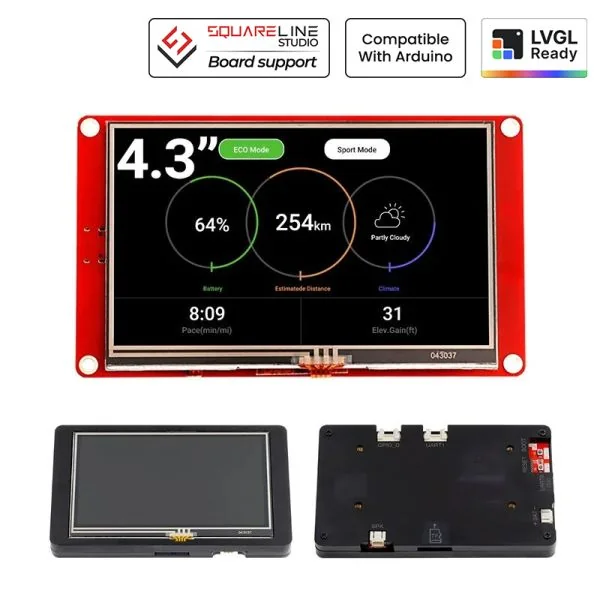

CrowPanel 4.3" Basic
Elecrow · Elecrow CrowPanel ESP32 4.3" HMI – ESP32-S3 480×272 RGB resistive
CrowPanel 4.3" Basic is a 4.3" 480x272 TN Resistive touch ESP32 display board by Elecrow based on the ESP32-S3 with 4MB flash, 2MB PSRAM.
Features, ports & interfaces
- RGB parallel display
- Resistive touch
- 2 MB PSRAM
- 4 MB flash
- microSD (TF) card slot
- Wi-Fi 4 (802.11 b/g/n, 2.4 GHz) – version from the ESP32-S3 datasheet
- Bluetooth 5 (LE) – version from the ESP32-S3 datasheet
- Serial port (UART): UART (HY2.0-4P)
- GPIO header 2x GPIO (HY2.0-4P)
- Speaker connector (8 Ω 2 W recommended)
- Battery connector PH2.0-2P, 3.7–4.2 V
- Buttons: BOOT + Reset
Specifications
| Parameter | Value | Source |
|---|---|---|
| Screen size | 4.3" | source |
| Resolution | 480x272 | source |
| Panel | TN | source |
| Shape | Rectangular | |
| Display interface | RGB | source |
| Display driver | NV3047 | source |
| Touch | Resistive | source |
| MCU / SoC | ESP32-S3-WROOM-1-N4R2 | source |
| MCU family | ESP32-S3 | source |
| CPU frequency | 240 MHz | source |
| Flash | 4MB | source |
| PSRAM | 2MB | source |
| SRAM | 512KB | source |
| Wi-Fi | 2.4 GHz Wi-Fi | source |
| Bluetooth | Bluetooth (SoC radio) | source |
| Category | Elecrow CrowPanel | |
| Battery | Battery connector PH2.0-2P, 3.7–4.2 V | source |
| Buttons | BOOT + Reset | source |
| GPIO | 2x GPIO (HY2.0-4P) | source |
| SD / TF | TF card slot | source |
| Speaker interface | Speaker connector (8 Ω 2 W recommended) | source |
| UART port | UART (HY2.0-4P) | source |
| Vendor | Elecrow |